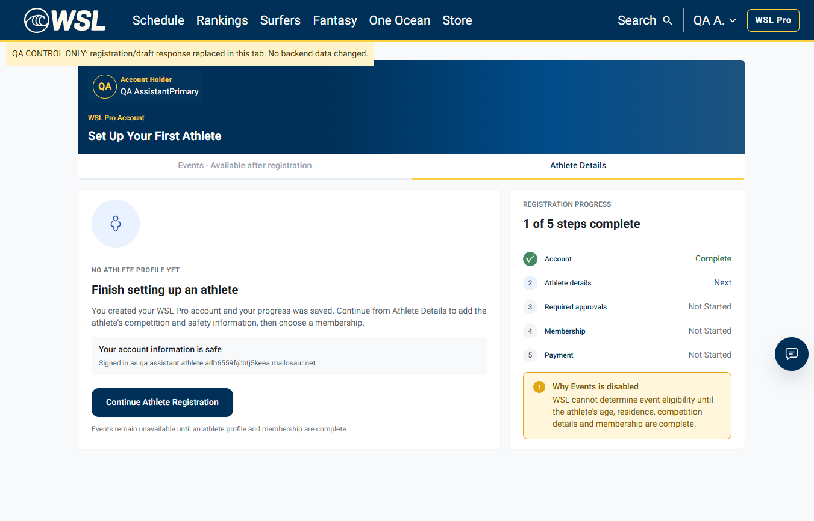

Original UI � real failing backend

Correction: The earlier test expected an obsolete URL. Beach Marshal correctly targets /athlete-registration/athletes. The page remains blank because its registration-data dependency fails.
Ask to open Events
|
v
open_page: athlete_events
|
v
/athlete-registration/athletes [correct]
|
v
Athletes unavailable + draft HTTP 503
|
v
Blank content; useful page error missingQA result: Routing resolution PASS; end-to-end Events verification BLOCKED by backend data failure.
Browser-only response fixture; no backend/database changes. Setup screen now renders. This is a diagnostic control, not proof of working real athlete data.

AthletesEntryPage gates rendering on !account.progress.isLoading, while its rendered AthleteShell mounts another useAthleteAccount/useRegistrationProgress observer. The draft query has staleTime:0 and the page handles session.error but not progress.error. Repeated 503 requests and blank/loading content are consistent with a retry/remount feedback loop; exact lifecycle sequence was not independently instrumented.
Prior WSL-9990 investigation found NATS publish permission denial to svc.competition.year_on_sale.get. This run confirms dependency failure but does not capture new AWS logs proving that underlying permission fault is still the cause.
Source commit: 69734f04898ea46ff3aeca10b1b270de5f0da6ac. Exact deployed SHA unverified.
Root-cause record � Real request and browser history evidence � Control evidence � Readable explanation